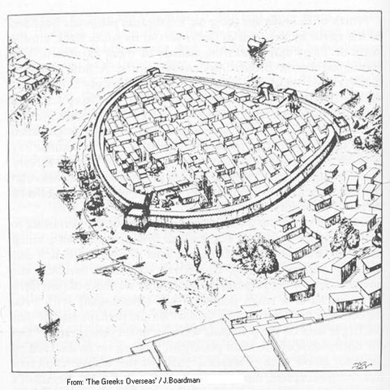

Table of contents (01.03)
How to read the poems – metaphor – irony – rhetoric – addressee – oral poetry
The poet – aristocratic p.o.v. – the tradition
Their past, Mycenae – divine kingship? – King of kings
The Dark Age – renaissance – signs & features of renaissance
Great Houses – Neleids – Ionian migration
Dating: as the majority – examples – not too precise
Geographical siuation – strategic issues – compare to Iliad situation
The wedding of Peleus and Thetis 11
Power – success in war – beauty
The funeral games - scapegoats
Zeus sends dream – eagle flying east – Iris - Nestor
Sparta - stasis - Delphi – hoplites -
Atlas- Phoenicia, Israel – god on earth, god in heaven -
political situation - Achilles, Mozes, Sokrates, Jezus – Alexander? – new gods for the city -
OVERVIEW
How to read the poems – metaphor – rhetoric – irony – addressee – oral poetry
This is an interpretation of the poems of Homer and of well-known historical events. The main difference between my interpretation and others, is that I see a second layer of meaning in the poems, beside the obvious literal one. Just as in irony or metaphor there is an underlying stratum of meaning which can be understood by likeness. In fact, the poems are constructed for a large part by taking common metaphors or ‘façons de parler’ and using them in a literal way as a part of the story and the indirect, ‘hidden’ reference as a private, ironical or political statement. In some societies, especially those which are at war, this can be the only way of voicing dissent or criticism.
Keeping this in mind, I assume Homer distinguishes two audiences: the ‘common man’, the enthusiastic listener who has little sense of irony or metaphor and who only reacts to the literal meaning (the ‘safe’ meaning), and secondly: the ‘aristocrat’: educated, leader of the people and used to indirect meanings. This is his main addressee. They, for instance, understand that when H. is talking about a shepherd and flock, he is also talking about a king and his people. These double meanings, I maintain, pervade all in the poems. The word ‘likeness’ is key here: it works by simple ‘A is-like B’ relations: a warrior is like a horse (because of the horse-plume helmet), a sword or spear is like a phallus (it penetrates flesh), a coward is like a woman (they are weak and don’t fight), etc. See Likenesses.
The Ancients saw Homer as the father of rhetoric; we shall miss large parts of his intention if we fail to recognize this. The poet of the Iliad is a master in the manipulation of the feelings, the pathos that his song will stir up in his audience and he makes use of this in every single line. The addressee in the Iliad is Achilles: he is for Homer the prototypical Greek warrior: young, proud, brave, angry. The poem is written to convince him of his duties. We, the audience, are expected to sit and listen, not objectively but fiercely partial in all respects: pro-Achilles (in his quarrel with Agamemnon), pro-Greek, and with an almost religious reverence towards the heroes he is singing about. This is a heroic society, it cannot be stressed enough, and a shame-culture as opposed to our own guilt-culture1.
We should also make efforts to take the point of view of a king, being sensitive to issues of leadership, responsibility and hierarchy, and of a Ionian inhabitant of the coast of Asia Minor. As in any interpretation, we should be aware of our expectations as members of the audience, and the places where Homer goes against these expectations are especially significant.
All this goes against the modern trend of Homer studies2. After the 19th century style of criticism which treated his poems like 19th-c. literary novels, it was discovered that the Homeric poems are oral poetry. This clearly is the case, but in my view it does not mean that we are dealing with “low density of information” as in the typical oral, semi-improvised poem, but with very carefully constructed, “high density” poems with multiple layers of meaning and allusion. The formulaic nature of the language easily suggests otherwise, but I think this is an aspect of style only: this is the kind of language the people and the poet knew and loved and expected, its repetitiveness makes it easy on both the singer and the listener, but we must do it the honour of assuming that everything in the poems is put there consciously, for a reason (even if we do not see this reason). We are not to give up too easily and use null-explanations like “digressions” or “traditional material”.
So if we wish to understand Homer, we are to transform ourselves into a member of his audience, and we have to discover all that we can about the context at that point in time. It is all-important to realise that as an 8th century Ionian Homer is singing about the war they are in. For us, or for a Greek of the mainland or of later generations, these are stories about a distant place, we love them because we know them well but they have little to do with us. But for a Ionian everything in the Iliad had a direct reference to his own situation.
This means the poet has to tread very carefully, as in any war situation. It is impossible for him to say some things openly, using direct meanings. Imagine singing to an army of crusaders that ‘now is not the time to take Jerusalem’: but the Iliad effectively says that about Troy. This must also be the reason that Ionia is conspicuously absent in the poems. The surface meaning of the poems avoids nearly all reference to contemporary events or situations3: Homer very carefully places everything in the past and in an area of Asia which has no immediate connection to Ionia
The poet – aristocratic p.o.v. – the tradition
The fact that he did sing something which must have been very controversial, even if in a disguised way, may shed some light on the tradition that Homer was an exile, no longer welcome in his own city. From his using language like this and from references within the poems, I conclude that H. must have been an aristocrat himself. No common bard could have had the audacity to say the things he did. From this it also follows that he must have enjoyed the patronage of some powerful aristocratic group, if indeed he travelled all around Hellas with his poems. Indeed I will argue – and this is the central thesis of this book – that the poems are meant to be a Speculum Regis, a king’s mirror4. They were meant to show ‘kings’ what was expected of them. As such the poems were composed by a high aristocrat (but not a reigning king) for aristocrats.
It will be practically unavoidable to speculate about the person Homer. I will do so, based on what I think I see in the poems; but the points I make about the meaning and intention of the poems themselves should not depend on this.
Their past, Mycenae – divine kingship? – King of kings
In Homer’s day, the Greeks had no King:5 rule was strictly local. They did remember however that in the past there had been Kings (or even one King?) ruling all of Hellas.
Some large and powerful aristocratic families, the so-called ‘great houses’, could even trace back their ancestry to these rulers. Nobles of Homer’s time naturally looked back on those early times as a golden age, today it is known (to us) as the Mycenaean age. Later Greeks associated this period firmly with bronze: there was no iron yet (iron was still seen as a relatively new invention in H.’s day).
M. society was very different from later Greece. Their system was centred around a royal palace, where all power and all rule was concentrated and the King was the apex of a strict and completely bureaucratic hierarchy. In character it appears to have been much more like Pharaonic Egypt than like later Greece.
The pyramid is a well-chosen symbol of such a hierarchical society: there are many ‘layers’ and on top of each layer there is one containing fewer blocks. There is no mixing of levels, always the ‘few’ rule the ‘many’. Everything is set in stone, symbolizing everlasting immutability. It culminates in the one at the top which stands for the Pharaoh/King. This top, at least in Egypt, is also the transition from earth to heaven, from human to divine. The Pharaoh is thus a god on earth, representing all authority and all power.
It is not clear whether the Mycenaean King was likewise ranked ‘divine’. Some linear-B texts seem to suggest this, others the opposite. I will come back to this later when discussing the Kronos-myth as described in Hesiod
Most of M. palace-culture was based on the plains, the fertile floodplains of rivers which are quite rare and small in Greece. They probably knew the same opposition between the rich folk in the plains, ruled by Kings and defended by standing armies equipped with armour and chariots, and the poor inhabitants of the surrounding hill country as for instance the peoples in Mesopotamia.
The Dark Age – renaissance – signs & features of renaissance
The palace-system broke down from the 12th c. BC onward, a long period of turmoil ensues which we call the Dark Age. All M. palace culture (material culture, bureaucracy, script, overseas trade etc.) is destroyed together with central authority.
Population diminishes drastically probably due to incessant local warfare and collapse of economy. Unfortunately there is little reliable information about the precise events and their chronology. Also, classical Greek views of their past and modern historians do not quite agree. What is clear is that we find central authority broken down and people living in small communities ruled by local chiefs. Whole tribes, e.g. the Dorians from NW-Greece, have ‘stood up’6 and moved from their home in the hills to the richer plains of the Peloponnese.
Around the 8th c. BC we find new growth: the population starts to grow again, contacts across the Mediterranean reappear, e.g. with the Phoenicians, Egypt, Libya and Italy, new styles of pottery appear, the alphabet is introduced etc. This also is a time that regional leagues are formed, the oracle in Delphi is founded and people start building local temples again for the gods. There was a kind of renaissance and a movement to pacify Hellas and diminish the eternal stasis, and Homer’s poems formed an important part of this movement. It is not unlikely that external contacts, for instance with the Phoenicians, were a stimulant for this movement.
Great Houses – Neleids – Ionian migration
Some of the local chiefs must have been members or clients of the ‘great houses’, creating a network of relations that maintained possibly the only trace left of an idea of Hellas, as a distinct entity. One of these Houses playing a large role both in Greek history and in Homer, were the Neleids7, the descendants of Neleus, King of Pylos (a palace in Messenia on the west coast). They claimed Poseidon as the founder of their dynasty. The coming of the Dorians to the Peloponnese (or possibly the Spartan conquest of Messenia) destroyed their regime and they went into exile, settling in Athens and trying to regain power there. There is an echo of this in an ancient myth from Athens which describes the struggle between Athena and Poseidon for power in the city, which ended in a compromise. With Athens as a base, they used their relations and power to organise the ‘Ionian migration’: a movement of Greeks across the Aegean to the Anatolian coast, the Ionian part stretching from Miletus in the south to Smyrna in the north.
Their motive for doing this is easy to understand from a dynastic point of view: if they, as a family, would succeed in leading the Greeks to conquer the fabulous prize of Asia (=Anatolia), the rich floodplains of the Maiandros (Meander) and the Hermos rivers (which are far larger and more fertile than any land in mainland Greece), they would not only have a very strong power base but also a reputation which might help them, in time, to reclaim some kind of Kingship.
All this about the Neleids underpins a large part of my interpretation of the Iliad. Neleus’ son Nestor is one of the main characters of the poem, Pylos one of the most frequently occurring place names. Every time Poseidon (their ancestor, also the god who ‘wants the land’ but ‘gets the sea’8) is mentioned there is, I will argue, a reference to this family and its ambitions.
Nowadays we have organised religion or nationalism if we want the people to ‘stand up’, in Homer’s time (and earlier no doubt) and place, they told stories of the kind we now call ‘charter myths’. An example of this is the slogan which accompanied the Dorian invasion of the Peloponnese: “we are the children of Heracles, we have come to claim our inheritance”. The issue of such a myth is not ‘true or false’, it is ‘for or against’. We do not really know if this particular myth of the Heracleidae was actually contemporary with the events it relates, but the story of Helen of Troy surely functioned as a charter myth for the Ionian migration.
consensus – examples – not too precise
Scholars agree roughly about the dating of Homer, putting him in the second half of the 8th or beginning of the 7th century BC. There is no reasons to reject this. Also I would put Hesiod as a contemporary of Homer. I will not pay much attention to the question of dating, though it is of importance if we want to reconstruct events related to Homer. Archaeology and history, in the absence of fixed reference points as in Egypt, cannot provide a greater precision than, say, 50 years (-25 to +25), for instance when dating is based only on pottery-style, and this is not sufficient to correlate items and events from different places with a greater exactness.
Geographical situation – strategic issues – compare to Iliad situation
Greek migration across the sea eastward had already started in M. times: in Miletus for instance there was a settlement well before the dark age. The turmoil of this period must have inspired many to seek their fortune in Asia. Apart from the Ionian-speaking part, to the north there was also an Aeolian-speaking stretch of Greek territory on the Asian coast.
The stream of people eastward coming through Athens was a different case: these people were effectively an army and their purpose was to conquer the western part of Anatolia, known as Asia. Greece in the 9th-8th c. BC was by no means able to raise a formidable army and equip them with weapons and ships in the way the Trojan War is traditionally pictured9. What they could do was propagate a policy of emigration – this helps keep the peace in the motherland, by getting rid of superfluous males like second sons, who would inherit no land or wealth – and use these people slowly, over a number of generations, to conquer more and more land across the sea. Leadership would of course continue to be claimed by the Neleid family. A very clever plan: but it failed because of flaws which became apparent in Homer’s time.
By then we find Ionians in the middle part of the Anatolian west coast: from Smyrna on the left to Miletus on the right. Twelve towns in all were traditionally Ionian (no villages, they could not live without walls). They occupied a narrow stretch of coastline, ‘leaning against the shore’ as Homer calls it10, while on their own they had no chance at all of gaining more. There were two great river-plains which they had their eyes on: of the Meander, where the Carians lived (this plain was opposite Miletus), and of the Hermos, Lydian country, separated from Smyrna by a mountain (mt. Sipylos). Not much is known about the Meander plain, probably there were no cities; the Lydians ruled (a loose confederation of tribes) from a near impregnable castle at Sardis. Both plains must have been well-populated: Hanfmann11 estimates Lydian population in Croesus’ time (early 6th c.) at 40-80.000. The 12 Ionian cities, of which Smyrna and Miletus were probably the largest, cannot have housed more than 1000-2000 people each. So even if they managed to field an army consisting of the fighting men of all cities, they could hardly hope to match their enemy’s strength in numbers. And if in spite of that they marched out with that army, they would have to leave their towns behind, the walls defended by ‘their wives and children, and the old men’12
This, as I will argue in this book, is Agamemnon’s army.
An artist’s impression of the city of Smyrna:
The city of Smyrna as it may
have looked by the end of the 7th century, about a century
after Homer’s time. The
houses outside the wall probably would not have been there. To the left is the mouth of
the Meles river. The view is due south from the slope of mt.
Sipylus.

Sophilos-vase, ca. 580 BC. Peleus with a kantharos in one hand stands before his house and greets the arriving deities led by Iris who carries a herald’s staff and wears winged boots. She is followed by Hestia and Demeter, Chariklo, Leto, Dionysos, Hebe and Cheiron.
Description – history – its enemy – historical developments
The language of the poems and the Greek tradition are enough to place Homer firmly in eastern Ionia but there is no hard evidence to link him to a specific place. On the basis of interpretation of several scenes in the Iliad and Odyssee I think Smyrna is the city most likely to be Homer’s birthplace and the place he was exiled from. It is a place with an interesting history and the earliest walled city in post-Mycenean Hellas. Built on a low rock near the sea, with the sea on one side and the wide mouth of the small river Meles on the other, it was protected from attack on two sides; but its huge wall alone (see illustration p. 8), built ca. 850 and rebuilt and enlarged a century later, in or near Homer’s time, is witness to the tense military situation it must have been in: this was a city under pressure. It had no fertile plain worth mentioning to rule over (nowadays it’s a parking lot), lying between the sea and a high mountain but it did have a good harbour and a sandy beach. On the other side of this mountain, mount Sipylos, we find the large and fertile flood-plain of the river Hermus, the country later to be called Lydia. Already in Homeric times the area was dominated by a high and near-impregnable acropolis at Sardis. It was rich (later, when gold was found near Sardis, incredibly rich), famous for horse-breeding, and quite densely populated. I will argue in this book that Sardis was Smyrna’s Troy.
ring composition & “balanced expansion” – problems – “stitched verse”
See appendix 2
Chapter 1: Achilles’ Judgement
The wedding of Peleus and Thetis
Cause of Trojan war – the wedding – Paris’ judgement – role of Helen – Achilles’ parents – the charter myth
Zeus was ultimately to blame for the whole sorry affair of the Trojan war: who else? It started in this way: Thetis, a lovely sea-nymph, one of the 50 Nereids, caught Zeus’ eye and he desired her. However, a prophecy came to be told, that a son of hers (though she was only a minor goddess) would be greater than his father – just as Zeus’ father Kronos once was foretold. This was enough for the gods to decide that Thetis must marry a mortal man. Hera found a partner for her in Peleus, the best of men and a favourite of the gods13. Thetis refused him at first but Peleus was able to hold the goddess down until she consented to marry him. This was to be the mother of all weddings: all the gods were there, giving presents and feasting, except one: Eris, the goddess of Strife, was not invited. In revenge Eris threw a golden apple into the crowd, a prize to be awarded ‘to the fairest’ (kallisti)14.
Three major goddesses put forward a claim to be the fairest: Hera, Zeus’ wife, Athena, Zeus’ daughter, and Aphrodite, also a daughter of Zeus15. As “head of the family” it fell to Zeus to choose the winner, but the father of gods and men knew better than that: the judge was going to be Paris, son of king Priam of Troy. While he was herding his sheep on the slopes of mt. Ida near Troy, the three goddesses appeared before him. Here we have the setting for the famous Judgement of Paris.
Each of the goddesses offered Paris a bribe: Hera promised him “kingship”, Athena “victory in war” and Aphrodite offered him “the most beautiful woman” (mortal woman of course, though she was yet another daughter of Zeus: Helen, wife of king Menelaos of Sparta). The actual description of the gifts varies but the substance is always the same: Hera offers power, or kingship; Athena offers victory/success in war/wisdom; Aphrodite offers him Helen – though the Homeric idea may have been that the goddess made him lustful and beautiful. Paris is constantly and mockingly described as ‘pretty’ and in il 24.30 the poet says: “[Paris]…chose the one, who gave him this terrible ‘lust for sex’ (with a word mainly used for women)”.
Now Helen4 was so beautiful that she was a prize: many from all over Hellas competed for her hand in marriage, but Menelaos of Sparta had won her. To preserve the fragile peace, all contestants promised to defend the winner against all who would attack him to gain her.
Apparently Aphrodite knew him best, for she became the one chosen by Paris who thereby incurred the undying hatred of the other two goddesses. So Paris travelled to Sparta and Helen went back with him to Troy. This was the origin of the Trojan war.
Opinions vary about Helen’s willingness: in the Iliad she certainly does not behave as an kidknap victim of Paris. For instance, she herself says (to Priam):“I wish I had preferred evil death, before I followed your son here, leaving my chamber…” (Il 3.173-). Priam has just said that he does not blame her, he blames the gods. Also in the Odyssey she is said to have fallen in love with Paris (Od 23.218-); however Nestor in the Iliad talks about avenging “the struggles and groans of Helen” (il 2.356), as if she was abducted and unwilling.
This is an important point, because the whole mythical justification for the Trojan war depends on it: if Helen came freely, this justification is significantly undermined.
Whatever was the case, Menelaos enlisted the help of his brother Agamemnon and heroes from all over Hellas and together they launched ‘a thousand ships’ to make war on Troy.
Peleus and Thetis did not have a long and happy life: immortal and ageless Thetis, never happy to be married to a mortal, retired to her native sea when Peleus got old (he is an old man when the action of the Iliad takes place). Achilles does receive the great ashen spear from his father, which is larger than anyone else’s.
Although they do not love each other,
Achilles in the Iliad loves them both. Peleus is depicted as an old
man, very brave and manly but actually powerless. Achilles’
recognition in enemy Priam of his own father’s suffering initiates the
cathartic healing at the end of the poem. Thetis is painted as the
eternal mother, always ready to console, unassuming but in reality the
power behind Zeus’ throne (il 1.396-406). Note especially the
reaction of Zeus to her pleas (il 1.495-530): he will not help for
Achilles’ sake, but he will help for her
sake.
Concentrating on the theme of Paris’ judgement, we can analyse this theme on several levels:
1. as a theme in the charter myth of the Ionian migration.
2. as a first appearance of the theme of the True, the Good and the Beautiful which reappears in Plato’s dialogues. I will deal with this in Chapter 5: The Polis.
3. as it appears in the Iliad in the actions of Achilles.
Inside the charter myth of the Ionian migration, it looks as if its organisers asked themselves the question: “how can we get them to go to Troy?”. It is hardly likely that many young men from the mainland would be eager to go east just to avenge the alleged rape of Helen. So, what could they bribe them with? Kingship (or status rather)? That place is occupied. The glory (and/or loot) of victory in war? Possibly. Their evaluation however appears to be that the men would choose “the woman”, i.e. sex, above anything else. This is why the myth of Helen is such a diabolical construction: it appears to give the men who go to “Troy” a license to follow their desires (“they raped our women, now we’ll take theirs”). In fact, Nestor says as much in the Iliad:
“…so let no one be in a hurry to get home,
before having slept with some Trojan’s wife
to pay back Helen’s struggles and groans” (il 2.356-)
In the real world, the myth must have had its predictable consequences. Herodotus accuses the Ionians in book 1,146-: “…even those who started in the Prytaneum (town hall) in Athens […] took no wives with them to the colony but married Carian girls whose parents they had killed…”.
Homer appears to find this a greatly dishonourable thing to do. More on this in Chapter 2: Apollo and the Art of Archery.
They were not wrong in their view of male motivation. History, cultural anthropology and recent events provide us with innumerable examples of the link between war and sex. Young men traditionally join a king’s army for a promise, a share in the loot (if they win). No one would be surprised about that. But to put a license to rape already in the “advertisement” for a war is very cynical, so much so that the gods might get angry because of it.
A pretty nice commentary on this in the Odyssey (which also suggests that, whatever else he is, the Homer of the Odyssey is an astute commentator on the Iliad) is the story of Ares and Aphrodite
Power – success in war – beauty
In the beginning of the Iliad, Apollo’s wrath has wreaked havoc on the Greek army: the fires to burn the dead were lighted everywhere, and this goes on for nine days without any action on the part of the Greek leader Agamemnon. The tenth day Achilles calls an assembly. The goddess Hera “put it in his heart”, says Homer.
The ensuing quarrel between Achilles and Agamemnon sets the program for the rest of the poem. What happens exactly?
Achilles, having called the assembly, is the first to stand up and speak, addressing King Agamemnon in an ironical fashion: “now that we have been rebuffed”, he says,”I suppose we had better go home if we are to escape death – either because of the war or because of the plague…”16. Then he suggests consulting a seer to find out why Phoebus Apollo is so angry. Agamemnon does not respond immediately, but the seer Kalchas does. Kalchas had already played a role earlier in the war (outside the scope of the Iliad, but no doubt known to the audience), prophesying that Aga.’s daughter Iphigenia would have to be sacrificed, and that the war would take 10 years. Both prophecies presumably did not please the King very much.
Kalchas is aware of the probability that he will anger the king again and asks for Ach.’s protection. Ach. does not hesitate to promise this to him: “while I live […] none of the Greeks will hurt you, not even Agamemnon, who boasts he is the best man in the camp!”17
The funeral games - scapegoats
Chapter 2: Apollo and the Art of Archery
Chapter 3: Agamemnon’s council
Chapter 4: The king, Zeus and Fate
Zeus sends dream – eagle flying east – Iris - Nestor
Sparta - stasis - Delphi – hoplites -
Atlas- Phoenicia, Israel – god on earth, god in heaven -
political situation - Achilles, Mozes, Sokrates, Jezus – Alexander? – new gods for the city -
Chapter 6: The poet’s progress
differences - commentary on Iliad – Proteus - Nobody did this – exile’s homecoming – the suitors – one last wag of Argos’ tail - tyranny
the tradition - grandfather – mother/father – halfbrother – Nausikaa – Chios – schoolmaster – Homerids & writing
4 later versions of her story were much longer than this (e.g. Apollodorus) but I mention only the parts relevant to the Iliad.
1 this need not be a major obstacle for us: any society at war instantly becomes a shame-culture, to a degree, I think we can put ourselves in their shoes.
2 and the current “the author is dead”-school of literary criticism.
3 Miletus is mentioned once but Smyrna not at all.
4 The tales of Arthur and the Round Table are another good example of a king’s mirror
5 Two words are often translated as ‘king’: basileus, meaning a local ruler (these did exist in H.’s time and later), and ‘anax’, ‘King of kings’, meaning someone who rules the local chiefs, a man such as Agamemnon. I will translate ‘anax’ as ‘King’ and basileus as ‘king’ or ‘chief’.
6 the word for this in Greek is ‘stasis’ and it describes the endemic disease which ultimately destroyed the Greeks: they could not stop fighting among themselves. A community is regarded as an army: when they ‘stand up’, they go to war; when they stop fighting they sit down. A polis is thus a ‘seated army’. The Greeks very much considered themselves a warrior people (e.g. Odysseus in il 14.85-).
7 famous branches were a.o. the Kodrides (of whom Plato claimed descent) and the Alcmaeonids.
8 that is interpretation; but he was certainly intimately associated with the Ionian Migration.
9 I shall leave aside the (in my eyes unlikely) possibility that in Mycenaean times the Trojan expedition really took place. Whatever was the case there, that is not what Homer was talking about.
10 il 15.740-, il 16.67-
11 Hanfmann: Sardis, 1983
12 il 18.514-
13 il 24.59-
14 this is a late detail But ‘by definition’ it must have been Eris who caused the conflict.
15 in Homer she is the daughter of Zeus and Dione.
16 il 1.59-
17 il 1.85-